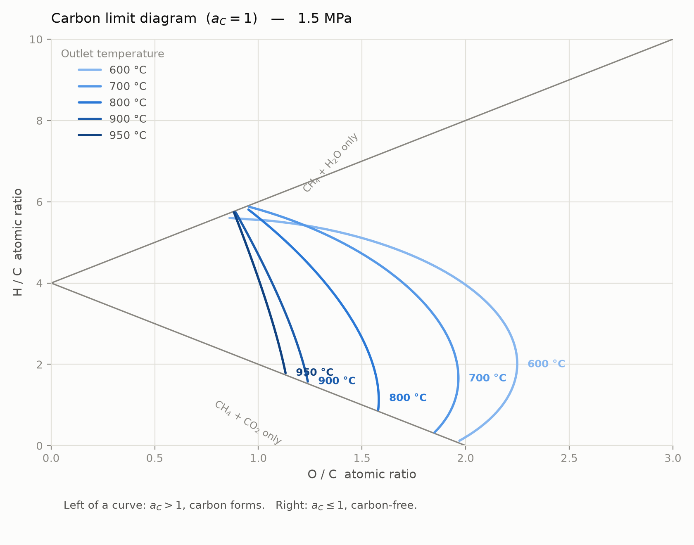

Carbon activity · CH₄ + CO₂ + H₂O reforming
CH₄ を CO₂ と H₂O で改質して合成ガスを作るとき、水蒸気を絞るほど省エネかつ CO₂ を有効利用できるが、触媒上に炭素が析出する。その境界を熱力学で切る量が炭素活量 aC で、aC > 1 なら気相が固体炭素に対して過飽和＝析出が有利になる。ここでは定義・計算法・chemflow2 での実装・原論文との照合をまとめる。
一次出典: Rostrup-Nielsen, J. Catal. 27 343–356 (1972) · DOI 10.1016/0021-9517(72)90170-4 ·
線図としての利用: Udengaard ら, Oil & Gas J. 90(10) 62–67 (1992) ·
本プロジェクトでの利用元: Mikuriya, Yagi, Shimura, AIChE Annual Meeting 2008 · Mikuriya_Yagi_Shimura_2008_AIChE_CO2_H2O_reforming.pdf
✅ 定義式は千代田自身の特許で確認できた — WO2012140994A1【0067】〜【0068】
AIChE 2008 は等高線 “Carbon Activity = 1” を示すだけで式を書いていないが、同社の特許 WO2012140994A1（発明者 坂口順一, 優先日 2011-04-12, 「CO₂ を排出しない合成ガスの製造方法」, PCT/JP2012/057127）の実施例セクション、公報 19 頁（PDF 21 頁目）に定義式が明記されている。 原文（PDF から直読）:
【0067】…また、カーボン活性とは、下記式４で表されるものであり、このカーボン活性の値が１を超えると触媒上にカーボンが析出しやすくなる。
【0068】［式４］ カーボン活性＝Ｋ×（Ｐco）²／（Ｐco₂）
ここで、Ｋは２ＣＯ＝Ｃ＋ＣＯ₂の反応の平衡定数であり、Ｐxは成分xの分圧である。
K の中身まで明示されており、これは下記 B（Boudouard 経路）そのもの。千代田は Boudouard 1 本で 定義しているが、§2 のとおり平衡気相では 3 経路が一致するので、改質器出口に適用する限り 本実装（3 経路の最大値）と同値。分圧の単位は明記されていないが、Boudouard の K が無次元である以上 atm 基準と解釈するほかなく、本実装と整合する。
⚠️ 保存 PDF は全 32 頁ともスキャン画像でテキスト層が無いため、位置の特定はページを画像化して目視で行った。 なお Google Patents はこの箇所を【0091】/ 全 92 段落と表示するが誤り。この WO 公報の明細書は 【0075】（符号の説明）で終わっている。ファミリー他文献のテキストが混在しているものと思われる。
aC は「その気相と平衡にある固体炭素（黒鉛）の活量」。固体炭素を生む反応それぞれについて、固体炭素の活量を未知数として平衡式を解くと得られる。
単位の落とし穴 — 分圧は atm
K は無次元なので、式中の p は本当は p/p°（p° = 1 atm）という無次元比。実装では Cantera の reference_pressure が 101325 Pa なのでそれに合わせ、分圧を atm で入れる。ここを Pa や bar にすると aC が桁で狂う。
3 式の差を取ると、すべて改質系の反応そのものになる。独立なのは 2 つ。
したがって 気相がこれらの反応について平衡していれば Q = K となり、3 つの aC は厳密に一致する。改質器出口（ギブズ平衡）はこれに当たり、値は一意。析出限界線図が単一の曲線で描けるのはこのため。
| 気相 | Boudouard | CH₄ 分解 | CO 還元 | 相対ばらつき |
|---|---|---|---|---|
| 改質器出口 850 ℃（Gibbs 平衡） | 0.394400 | 0.394400 | 0.394400 | 1.65e−11 |
| 改質器出口 900 ℃（Gibbs 平衡） | 0.234475 | 0.234475 | 0.234475 | 4.87e−12 |
| 改質器入口 850 ℃（非平衡） | 0 | 75.3 | 0 | — |
入口で 2 経路が 0 なのは原料に CO が無いため。非平衡の気相に当てる場合は 3 つの最大値を取る（どれか 1 つでも 1 を超えれば析出しうる、という保守側の扱い）。
この判定が保証しない範囲
炭素析出限界線図は “equilibrated gas”（平衡気相）を前提にした反応器全体としての工学的判定。実際の改質管では入口付近で気相がまだ平衡しておらず、そこでは局所的に aC が高くなりうる（上表の入口 75.3 がまさにそれ）。千代田化工の耐炭素析出触媒が効くのはこの速度論的な領域で、同社は aC > 1 の側で運転することを売りにしている（§5）。
気相 gri30.yaml・固体炭素 graphite.yaml（相 C(gr)）の標準生成ギブズエネルギーから。
| T | KB (Boudouard) | KM (CH₄ 分解) | KR (CO 還元) |
|---|---|---|---|
| 500 ℃ (773.15 K) | 2.4296e+02 | 4.7347e−01 | 4.7471e+01 |
| 700 ℃ (973.15 K) | 9.9978e−01 | 7.7947e+00 | 6.2037e−01 |
| 850 ℃ (1123.15 K) | 6.0235e−02 | 3.4111e+01 | 6.5862e−02 |
| 900 ℃ (1173.15 K) | 2.7833e−02 | 5.1449e+01 | 3.5432e−02 |
| 1000 ℃ (1273.15 K) | 7.1738e−03 | 1.0646e+02 | 1.1877e−02 |
妥当性の確認: Boudouard は発熱なので高温で K が下がり、メタン分解は吸熱なので高温で K が上がる。そして KB ≈ 1.000 がちょうど 973.15 K（700 ℃）で得られ、Boudouard 平衡の古典的な基準温度と一致する。
Mikuriya, Yagi, Shimura, AIChE Annual Meeting 2008, Fig.4 “Feed Gas Conditions for Process Studies” · 同図は等高線 “Carbon Activity = 1” を示すのみで定義式を書いていない（出典は同論文の参考文献 4 = Udengaard ら 1992）。
供給を CH₄ + CO₂ + H₂O とすると、原子比は
となり、CH₄+CO₂ のみなら (0, 4) → (2, 0) の直線、CH₄+H₂O のみなら (0, 4) から傾き 2 の直線。この 2 本が到達可能領域の左境界（V 字）を成す。与えられた (O/C, H/C) に対し まず T・P で平衡組成を求め、その組成で aC を評価する（“principle of equilibrated gas”）。

examples/example_carbon_limit.py| H/C | T | 本実装 | Fig.4 読み取り | 差 |
|---|---|---|---|---|
| 4.0 | 950 ℃ | 1.008 | 1.007 | +0.001 |
| 4.0 | 900 ℃ | 1.067 | 1.131 | −0.064 |
| 4.0 | 800 ℃ | 1.323 | 1.366 | −0.043 |
| 4.0 | 700 ℃ | 1.699 | 1.710 | −0.011 |
| 4.0 | 600 ℃ | 1.987 | 2.000 | −0.013 |
| 2.0 | 950 ℃ | 1.122 | 1.159 | −0.037 |
| 2.0 | 900 ℃ | 1.218 | 1.255 | −0.037 |
| 2.0 | 800 ℃ | 1.552 | 1.600 | −0.048 |
| 2.0 | 700 ℃ | 1.959 | 1.959 | ±0.000 |
| 2.0 | 600 ℃ | 2.249 | 2.207 | +0.042 |
10 点すべてで差は ±0.064 以内。図の線幅だけで約 0.03 相当なので読み取り誤差の範囲で一致する。曲線の順序（950 < 900 < 800 < 700 < 600）、形状、上端が H/C ≈ 5.7 で境界に収束する点も一致。原論文は炭素限界曲線の圧力を明記していないが、1.5 MPa と推定して一致した（H₂/CO 線について「950 ℃・1.5 MPa」と書かれている値）。
確認できたこと / できていないこと
できた: §1 の定義（3 反応・平衡気相・黒鉛基準）で原論文の図が再現できる。
できていない: 原論文自身は定義式を書いていないので、これは「同じ結果を出す定義に到達した」確認であって「千代田が使った式そのものの確認」ではない。定義の一次出典である Udengaard ら 1992（Oil & Gas J.）は未入手（商業誌）。
主根拠（取得済み）: J. R. Rostrup-Nielsen, J.-H. Bak Hansen, “CO₂-Reforming of Methane over Transition Metals”, J. Catal. 144 38–49 (1993) · DOI 10.1006/jcat.1993.1312 · rostrupnielsen1993.pdf（全 12 頁・スキャン、テキスト層なし）·
概念の原著（未入手）: 同, J. Catal. 27 343–356 (1972) · DOI 10.1016/0021-9517(72)90170-4
ここが実装上いちばん重要な留保。 Ni 触媒上で成長する炭素は黒鉛ではなくウィスカー（フィラメント）状炭素で、黒鉛より自由エネルギーが高い（＝不安定）。そのため aC = 1（黒鉛基準）を超えても、すぐには析出しない。1993 年論文の abstract がこれを端的に述べている:
Rostrup-Nielsen & Bak Hansen 1993, abstract（原文）
“All catalysts show smaller equilibrium constants for methane decomposition than that based on graphite, the effect being largest for the noble metals. Ru and Rh show high selectivity for carbon-free operation, which can be ascribed to high reforming rates combined with low carbon formation rates. Similar high selectivity can be achieved with a sulfur-passivated nickel catalyst.”
5.1 平衡定数は黒鉛より小さい — 粒子径と金属種で決まる
同論文 §3.2 / Fig. 4（TGA 実測の CH₄ 分解平衡定数 ln Kp 対 1000/T）より:
“All catalysts have equilibrium constants smaller than that calculated on a graphite basis. The Ni-a curve … corresponding to a maximum nickel crystal size of ca. 300 nm. The Ni-b curve … maximum nickel crystal size below 10 nm. This results in a smaller equilibrium constant because of the higher surface energy of the whisker carbon. The noble metals have even smaller equilibrium constants. Palladium shows a track different from the other metals.”
Fig. 4 の曲線は上から Graphite > Ni-a > Ni-b > Ni-1 > Rh > Ru > Ir > Pt > Pd の順。K が小さいほど析出しにくいので、黒鉛が最も析出しやすく、貴金属ほど析出しにくい。
| 触媒 | Ni-a (300 nm) | Ni-b (<10 nm) | Ni-1 | Rh | Ru | Ir | Pt | Pd |
|---|---|---|---|---|---|---|---|---|
| aC,crit ≈ | 1.5 | 2.7 | 4.1 | 5.5 | 6.4 | 6.7 | 11 | 25 |
この表の精度について
数値はスキャン図からの目視読み取り（対数軸）で、±30 % 程度の不確かさがある。順序と桁は信頼できるが、個々の値を設計値として使うべきではない。原著 Fig. 4 を直接参照すること。
5.2 金属による違い — 活性と炭素生成
| 触媒 | 金属表面積 m²/g | H₂O/CH₄ 改質 550 ℃ | CO₂/CH₄ 改質 550 ℃ | CO₂/H₂ 逆シフト 500 ℃ | H₂O / CO₂ 比 |
|---|---|---|---|---|---|
| Ni-1 | 1.1 | 2.6 | 1.9 | 5.3 | 1.37 |
| Ru | 3.0 | 8.9 | 2.9 | 8.7 | 3.07 |
| Rh | 2.2 | 8.1 | 1.9 | 5.4 | 4.26 |
| Pd | 1.4 | 1.6 | 0.18 | 8.0 | 8.9 |
| Ir | 1.3 | 4.5 | 0.44 | 8.6 | 10.2 |
| Pt | 1.0 | 2.0 | 0.36 | 7.2 | 5.6 |
| Ni-2 | 5.3 | 4.2 | 2.70 | 3.9 | 1.56 |
原著が示す活性序列は Ru, Rh > Ir > Ni, Pt, Pd。CO₂ を水蒸気に置き換えると活性は下がり、その度合いは金属で違う（Ni は 1.4 倍程度だが Ir は 10 倍）。Ni では CO₂ 改質と水蒸気改質の差が小さいため、CO₂ 改質では貴金属の優位が縮まる。
| 触媒 | 炭素 wt% 500 ℃ | 炭素 wt% 650 ℃ | 金属結晶径 nm | ウィスカー |
|---|---|---|---|---|
| Ni-1 | 3.5 | 2.0 | 5–20 | あり（5–20 nm・Ni 内包） |
| Ru | 0.3 | 1.8 | 1.5–7 | No whiskers |
| Rh | 1.1 | 2.5 | 1–10 / 3–100 | 650 ℃ のみ（Fe 汚染由来） |
| Pd | 0 | 2.8 | 10–25 | 650 ℃ で Pd 内包 |
| Ir | 0.5 | 2.3 | <4 | No whiskers |
| Pt | 0.2 | 2.6 | <3–4 | Fe 汚染由来 |
原著の但し書きが効いている: “Whisker carbon was observed on the rhodium and platinum catalysts, but in both cases contamination of the catalyst with iron most probably caused the formation of whiskers.” つまり 真にウィスカーを作るのは Ni と Pd だけ。Ru・Ir は明確に “No whiskers”。
5.3 Alstrup の粒子径補正（参考・一次未確認）
Ni について、黒鉛からのずれを粒子径 d の関数で表す式が二次資料で流通している。「Alstrup が自身の知見と Rostrup-Nielsen の知見を組み合わせ、フィラメント成長を触媒する最大粒子の径の関数として提案した」とされる。
| Ni 粒子径 d | ΔGc,dev | 700 ℃ | 800 ℃ | 850 ℃ | 900 ℃ | 950 ℃ |
|---|---|---|---|---|---|---|
| 10 nm | 11.90 | 4.35 | 3.80 | 3.58 | 3.39 | 3.22 |
| 20 nm | 7.25 | 2.45 | 2.25 | 2.17 | 2.10 | 2.04 |
| 50 nm | 4.46 | 1.74 | 1.65 | 1.61 | 1.58 | 1.55 |
| 100 nm | 3.53 | 1.55 | 1.49 | 1.46 | 1.44 | 1.41 |
| 300 nm | 2.91 | 1.43 | 1.38 | 1.36 | 1.35 | 1.33 |
| ∞（黒鉛極限） | 2.60 | 1.38 | 1.34 | 1.32 | 1.31 | 1.29 |
⚠️ この式は一次確認できていない — 主根拠にしない
出所: Web 上の二次資料（大元は Appl. Catal. A 2018 の whisker carbon 論文、有料）。最有力の一次候補は I. Alstrup, J. Catal. 109(2) 241–251 (1988), DOI 10.1016/0021-9517(88)90207-2 だが、当該式がこの論文に載っているかは未確認。
1993 Fig. 4 との整合は部分的: Ni-a（300 nm）は式が 1.36〜1.43、Fig. 4 読み取りが約 1.5 でよく一致する。 しかし Ni-b（<10 nm）は式が 3.4〜4.4 を与えるのに対し読み取りは約 2.7 で開きがある。 図の読み取り精度の問題か式の適用範囲の問題かは切り分けられていない。
結論: 本ドキュメントの主根拠は §5.1 の 1993 Fig. 4（実測・原著が手元にある）。この式は Ni 向けの参考値として残す。 千代田の触媒は貴金属担持なので、そもそも Ni 向けの式より Fig. 4 の貴金属データのほうが直接効く。
まとめ: aC ≤ 1 という判定は常に保守側（実際より早めに「析出する」と言う）。Ni でも 1.5〜4 倍、貴金属なら 5〜7 倍の余裕がある。
実測との整合 — 村長 1961
村長 潔（東北肥料）は CH₄–H₂O–CO₂ 系の炭素析出曲線を 595–982 ℃ で実測し、「温度 816 ℃以上では実験値と理論値はほぼ一致するが、706 ℃以下では全般に実験値の方が低く」と報告している。低温側で「理論より析出しにくい」のは上記のずれと同じ向き。本プロジェクトの運転温度 850–900 ℃ は「ほぼ一致」する範囲に入る。
千代田化工の立ち位置 — a_C ≤ 1 は同社触媒を前提にしない条件
AIChE 2008 原文: “operations on the left side of the carbon limit curve are more economical … But in these conditions, product synthesis gases have high thermodynamic potential for carbon formation. In our process, feed gas conditions on the left side of carbon limit line could be selected because our catalyst has high resistance against carbon formation.”
つまり CT-CO2AR® の売りは 「aC > 1 の領域でも運転できる触媒耐性」にある。
ただし同社の設計実務はそうではない。 特許 WO2012140994A1 の表 5（公報 20 頁）を見ると、 実施例 1〜4 のすべてで「出口のカーボン活性」を 0.90 に設計している（下表）。 触媒耐性を余裕として持ちつつ、プロセス設計としては aC < 1 を守っている。 本プロジェクトが課す aC ≤ 1 は、千代田の設計実務と一致する。
| 項目 | 単位 | 実施例 1 | 実施例 2 | 実施例 3 | 実施例 4 |
|---|---|---|---|---|---|
| S/C モル比 | − | 4.0 | 0.85 | 4.0 | − |
| CO₂/炭素 モル比 | − | 9.6 | 0.82 | 9.4 | 2.4 |
| H₂/CO モル比 | − | 2.0 | 2.0 | 2.0 | 0.5 |
| メタン含有率 | vol% | 10 | 10 | 10 | 2.8 |
| リフォーマー入口/出口温度 | ℃ | 500/550 | 500/850 | 500/550 | 500/850 |
| リフォーマー出口圧力 | MPaG | 0.15 | 2.00 | 0.15 | 1.3 |
| GHSV | 1/h | 5950 | 265 | 5540 | 209 |
| 出口のカーボン活性 | − | 0.90 | 0.90 | 0.90 | 0.90 |
実施例 2 が本プロジェクトの検討条件に最も近い（850 ℃・2.0 MPaG・S/C 0.85 の低水蒸気）。 こちらの検討（900 ℃・1.04 MPaG・H₂O/CH₄ = 0.72）と同じ領域を、aC = 0.90 に収めている。
chemflow2/core/carbon_activity.py（計算）・Problem.constrain_carbon_activity（制約）・examples/example_carbon_limit.py（線図）・tests/test_carbon_activity.py（13 件）
from chemflow2.core.carbon_activity import carbon_activity_of a = carbon_activity_of(ReactOut) # 出口条件で評価（3 経路の最大値） a = carbon_activity_of(ReactOut, per_route=True) # 経路別（非平衡気相の診断用） problem.constrain_carbon_activity(ReactOut, 1.0, T=900, P="1.04MPaG") # 制約 1 本
なぜ「a_C = 1」で課すのか — 不等式は等式系に載らない
chemflow2 は自由度が釣り合った等式系なので、aC ≤ 1 という不等式はそのままでは載らない。代わりに aC = 1 を課して限界そのものを解く。自由変数を 1 つ開けておけば、その変数の限界値が直接求まる（水蒸気供給を未知にすれば「炭素析出しない最小の水蒸気量」）。
残差は log(aC) − log(value) を使う。 差の形だと反復の途中で分母の分圧が 0 に近づいて 1e300 に飛び、実際に overflow して収束しなかった。零点は同じで、条件数だけが桁違いに良くなる。
| T | aC | その温度の限界 O/C | 余裕 | 判定 |
|---|---|---|---|---|
| 800 ℃ | 0.619 | 1.421 | +0.305 | 炭素フリー |
| 850 ℃ | 0.394 | 1.248 | +0.478 | 炭素フリー |
| 900 ℃ | 0.235 | 1.130 | +0.596 | 炭素フリー |
H₂/CO = 1.3837 と CH₄ 転化率 88.62% を維持する条件下では、現行圧力では炭素活量の制約は効いていない（aC ≤ 0.50）。制約が下限を決めるようになるのは圧力を 0.1 MPaG 程度まで下げたときで、そこでは転化率制約のほうが自動的に満たされる側に回る。